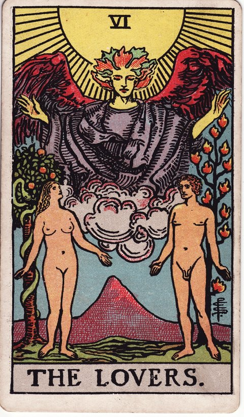

메이저 아르카나 · 타로 카드 백과사전
연인 (The Lovers)

정방향
키워드: 마음이 통하는 인연 · 조화로운 선택 · 진심 어린 끌림 · 가슴 뛰는 끌림 · 잘 맞는 결 · 설렘이 이끄는 결정
조언: 머리보다 마음이 진심으로 원하는 방향을 따라 선택해보세요.
연애운
솔로
가치관이 잘 맞는 사람과의 특별한 인연이 시작될 수 있는 설레는 시기입니다. 머리로 따지기보다 마음이 이끄는 대로 다가가면 좋은 결실을 맺습니다.
커플
서로에 대한 이해가 깊어지며 관계가 한층 조화롭게 발전하는 시기입니다. 서로의 다름을 이해하려는 노력이 관계를 한층 성숙하게 만듭니다.
재물운
소비
가치관이 맞는 사람과 함께하는 소비나 결정이 만족스러운 시기입니다. 함께 고민하고 결정한 만큼, 지출 내역을 나중에 같이 확인해보면 만족도가 더 오래갑니다.
투자
신뢰하는 파트너와의 협업이 재정적 시너지를 낼 수 있는 시기입니다. 역할과 책임을 미리 명확히 나눠두면 예상보다 더 큰 성과로 이어질 수 있습니다.
취업운
구직
가치관이 맞는 조직을 찾으면 만족스러운 선택으로 이어지는 시기입니다. 조직의 가치관이 자신과 맞는지 미리 살펴보면 만족도가 높아집니다.
이직
마음이 맞는 동료들과 함께할 새로운 자리가 좋은 기회가 될 수 있습니다. 합류하기 전에 팀 분위기나 일하는 방식을 미리 물어보면 더 확신을 가지고 결정할 수 있습니다.
직장운
팀워크
마음 맞는 동료와의 협업이 즐겁고 생산적인 시기입니다. 역할을 나눌 때 서로의 강점을 살릴 수 있게 조율하면 결과물의 완성도가 더 높아집니다.
개인성과
가치관에 맞는 업무를 선택하면 만족도가 높아지는 시기입니다. 지금 맡은 업무 중 자신의 가치관과 맞닿아 있는 부분을 찾아 의미를 더해보세요.
사업운
창업준비
가치관이 통하는 파트너와 함께 사업을 시작하기 좋은 시기입니다. 파트너와 뜻이 잘 맞으면 시작 단계의 어려움도 수월하게 넘길 수 있습니다.
운영중
오랫동안 손발을 맞춰온 동업자와 함께라면 사업이 한 단계 도약할 수 있는 시기입니다. 서로를 믿고 역할을 나누는 것이 사업의 좋은 원동력이 됩니다.
학업운
시험준비
함께 공부하는 사람과의 시너지가 학습 효율을 높여주는 시기입니다. 혼자 풀기 어려운 문제는 서로 설명해주며 풀어보면 이해도가 훨씬 깊어집니다.
진로고민
마음이 이끄는 전공이나 진로를 선택하면 만족스러운 결과로 이어질 수 있습니다. 주변의 기대나 조건에 흔들리기보다 실제로 관심 있는 분야를 짧게 체험해보고 확인해보세요.
건강운
신체
몸과 마음의 균형이 잘 맞아 컨디션이 조화로운 시기입니다. 몸이 보내는 신호에 맞춰 식사와 수면 시간을 규칙적으로 유지하면 이 흐름을 오래 이어갈 수 있습니다.
정신
가치관에 맞는 선택들이 마음의 평온함을 가져다주는 시기입니다. 중요한 결정을 앞두고 있다면 스스로의 우선순위를 먼저 정리해보는 것이 도움이 됩니다.
대인관계운
새로운 인연
가치관이 통하는 사람들과 자연스럽게 깊은 유대를 쌓는 시기입니다. 공통의 관심사가 있는 모임이나 자리에 나가보면 좋은 인연을 만날 확률이 높아집니다.
기존 관계
서로를 더 깊이 이해하게 되며 관계가 조화롭게 발전하는 시기입니다. 취향이나 생각이 달라도 그 차이 자체를 즐겨보는 여유가 관계를 더 편안하게 만듭니다.
명예운
좋은 인연과 조화로운 관계 덕분에 평판이 좋아지는 시기입니다. 좋은 관계 속에서 자연스럽게 쌓인 신뢰가 평판으로 이어집니다.
이사운
소중한 사람과 함께 뜻을 모아 이동을 결정하는 시기입니다. 각자 원하는 조건을 미리 이야기해두면 이후 조율 과정에서 갈등을 줄일 수 있습니다.
자식운
아이와 마음이 잘 통하며 화목한 시간을 보내는 시기입니다. 아이가 좋아하는 활동을 함께 해보면 소통이 한층 더 자연스러워집니다.
역방향
키워드: 엇갈린 가치관 · 흔들리는 선택 · 관계의 불균형 · 기울어진 저울 · 엇나간 시선 · 말 못한 서운함
조언: 서로 다른 곳을 바라보고 있지는 않은지 솔직한 대화로 확인해보세요.
연애운
솔로
마음이 흔들리며 누구에게 다가가야 할지 갈피를 못 잡을 수 있는 시기입니다. 마음을 정리할 시간을 갖고 진짜 원하는 것이 무엇인지 돌아보세요.
커플
가치관 차이가 드러나며 중요한 갈림길에서 갈등이 생길 수 있습니다. 서로의 가치관을 강요하기보다 있는 그대로 존중해보는 노력이 필요합니다.
재물운
소비
함께 쓰는 돈에 대한 가치관 차이가 갈등으로 이어질 수 있습니다. 돈 문제일수록 미리 솔직하게 기준을 맞춰두는 것이 좋습니다.
투자
동업이나 공동 투자에서 의견이 엇갈리며 손해를 볼 수 있는 시기입니다. 함께하기 전에 서로의 기대치를 명확히 확인해두세요.
취업운
구직
여러 제안 사이에서 어떤 것이 맞는 길인지 갈피를 못 잡을 수 있습니다. 조급하게 정하기보다 각 선택지의 가치관을 꼼꼼히 비교해보세요.
이직
이직 이후 조직과 가치관이 맞지 않아 혼란을 느낄 수 있는 시기입니다. 옮기기 전에 조직의 문화를 조금 더 알아봤더라면 좋았을 시기입니다.
직장운
팀워크
팀 내 의견 차이로 갈등이 생기며 협업이 어려워질 수 있습니다. 의견 차이를 억누르기보다 솔직한 대화로 풀어가는 것이 필요합니다.
개인성과
여러 업무 사이에서 우선순위를 정하지 못해 혼란스러울 수 있습니다. 우선순위를 정할 때 자신에게 중요한 가치가 무엇인지 먼저 살펴보세요.
사업운
창업준비
파트너와의 방향성 차이를 초기에 조율하지 못하면 갈등이 커질 수 있습니다. 역할과 지분처럼 민감한 부분은 문서로 미리 정리해두는 것이 안전합니다.
운영중
동업자와의 가치관 차이가 사업 운영에 갈등을 만들 수 있는 시기입니다. 가치관 차이를 방치하지 말고 솔직한 대화로 조율해보세요.
학업운
시험준비
함께 공부하는 사람과의 불협화음이 집중을 방해할 수 있는 시기입니다. 집중을 방해하는 관계라면 잠시 거리를 두는 것도 방법입니다.
진로고민
여러 선택지 사이에서 갈피를 못 잡으며 혼란을 느낄 수 있습니다. 여러 선택지를 두고 조급해하기보다 마음이 향하는 곳을 다시 살펴보세요.
건강운
신체
생활 습관 사이의 불균형이 컨디션 난조로 이어질 수 있는 시기입니다. 불균형한 생활 패턴을 조금씩 조화롭게 조정해보세요.
정신
중요한 선택을 앞두고 갈등하며 마음이 어지러울 수 있습니다. 중요한 결정 앞에서는 잠시 멈춰 마음을 정리하는 시간이 필요합니다.
대인관계운
새로운 인연
누구와 더 가까워져야 할지 갈피를 못 잡으며 혼란스러울 수 있습니다. 여러 관계 사이에서 조급해하지 말고 우선순위를 천천히 정리해보세요.
기존 관계
서로 다른 우선순위나 신념이 부딪히며 가까운 관계 안에서 마찰이 생길 수 있습니다. 가치관 차이를 억지로 맞추기보다 솔직하게 이야기해보는 것이 좋습니다.
명예운
관계 안의 갈등이 겉으로 드러나며 평판에 영향을 줄 수 있습니다. 갈등을 방치하기보다 빠르게 대화로 풀어가는 것이 좋습니다.
이사운
이동을 둘러싼 의견 차이로 결정이 늦어지거나 갈등이 생길 수 있습니다. 의견 차이가 있다면 서두르지 말고 충분히 대화해보세요.
자식운
아이와의 가치관 차이로 갈등이 생기며 서운함을 느낄 수 있습니다. 차이를 인정하고 아이의 입장에서 다시 한번 생각해보세요.
같은 슈트: 바보 · 마법사 · 여사제 · 여황제 · 황제 · 교황 · 연인 · 전차 · 힘 · 은둔자 · 운명의 수레바퀴 · 정의 · 매달린 사람 · 죽음 · 절제 · 악마 · 탑 · 별 · 달 · 태양 · 심판 · 세계
홈에서 직접 카드 뽑아보기 ↗